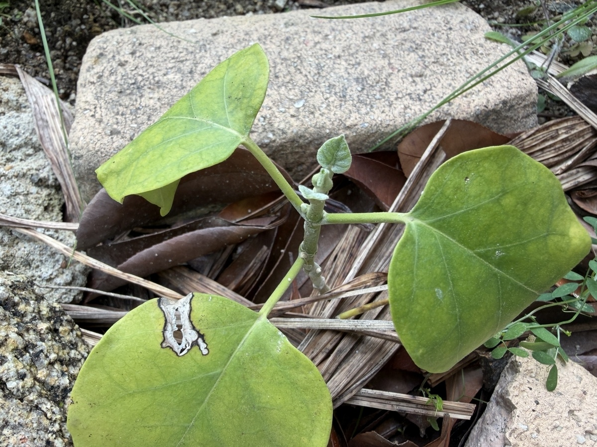

冬を越したキジョランの、春の姿
4月25日のキジョランです。昨年9月12日に記録した、幅広い葉を重ねていた小さな株が、冬を越して春を迎えました。
今回は大きな葉が3枚はっきりと見え、左上の葉の後ろにも、一部隠れた葉が見えます。昨年9月のように葉が重なって茎を隠す姿とは異なり、株の中央の茎や、そこから左右へ伸びる葉柄がよく見えるようになりました。
大きな葉には黄緑色の部分が広がり、一部には傷みも見られます。その一方で、茎先には小さな葉が顔を出しています。冬を越して残った葉と、これから育っていく小さな葉が、一緒に見られる状態です。

昨年9月よりも、葉の重なりが少なくなりました
昨年9月12日は、丸みのある葉が手前や左右、奥へと広がり、中央の葉がほかの葉を隠すほど重なっていました。落ち着いた緑色の葉も多く、一枚一枚の幅広さが印象的でした。
今回は葉の間に空間ができ、株の中心が見えやすくなっています。右へ広がる葉、左上へ向かう葉、手前へ伸びる葉がそれぞれ離れて見え、葉柄の長さや付き方も分かりやすくなりました。
葉が減った分、見た目のボリュームは昨年9月より小さく感じます。ただ、残った葉は幅広い形を保っており、キジョランらしい丸みのある姿は変わりません。
昨年の葉がどれだけ残り、どの葉が落ちたのかを一枚ずつ特定することはできませんが、株全体としては、葉の重なりが少なくなったことが大きな変化です。
大きな葉は黄緑色が目立ち、葉脈が浮かんで見えます
残った大きな葉には、黄緑色から黄色に近い部分が見られます。特に左上と手前の葉は明るい色になり、葉脈に沿って緑色が残るような濃淡が目立ちます。
右側の葉は、それらに比べると緑色を保っていますが、葉全体が均一な濃い緑というわけではありません。中央付近と縁の近くでも色合いに違いがあり、黄緑色が混じっています。
昨年9月にも中央の葉にまだらな濃淡がありましたが、今回は大きな葉の複数で明るい葉色が目立ちます。葉の重なりが少なくなったことに加え、この色の変化によって、株全体の印象も変わりました。
冬を越した葉の変化として気になるところですが、葉色だけで原因を決めることはできません。今ある葉の色がさらに変わるのか、それとも残ったまま新葉が育つのか、引き続き見ていきたいと思います。
手前の葉には、白っぽく傷んで穴になった部分があります
手前の大きな葉には、葉の縁に近いところに、白から薄茶色に見える傷みがあります。その周囲は濃い茶色で縁取られ、内側の一部は抜けて穴になっています。
昨年9月の記録では、大きな穴や広い枯れ込みは目立ちませんでした。今回は、この部分の傷みがはっきりと分かります。葉全体が失われているわけではありませんが、一枚の葉の中に、緑や黄緑色の部分と、乾いて薄くなったような部分が混在しています。
傷みがいつ、どのようにできたのかは分かりません。虫によるものか、寒さなど別の影響によるものかも、この状態だけでは決められません。まずは今ある傷の形と広がりを記録し、周囲へ大きく広がらないかを見ていきたいと思います。
茎先には、折り重なるような小さな葉が見えます
大きな葉の変化とともに目を引くのが、株の中央、茎先に出ている小さな葉です。先端には葉脈の見える小さな葉が立ち上がり、そのすぐ下にも、まだ十分に開いていない葉が重なるように見えます。
大きな葉に比べると、表面は白っぽい細かな毛に覆われたように見え、色も淡い緑色です。葉の縁が内側へ巻いたような部分もあり、これから広がっていく途中の姿に見えます。
黄緑色になった大きな葉が目立つ中で、この小さな葉が出ていることは、うれしい変化です。株全体が大きく育った状態ではありませんが、茎先には新しい葉の動きが見られます。
まだ葉が小さく重なっているため、何枚に分かれて育つのかは、もう少し開いてから見たいと思います。これから葉身が広がり、大きな葉とは違う新しい緑が増えていくことを楽しみにしています。
中央の茎が見え、葉の付いていた跡も分かります
葉の間が空いたことで、中央の短い茎がよく見えるようになりました。茎の途中には小さな丸い跡や突起があり、葉が付いていた位置と思われる部分も見えます。
茎先に近いところからは、左右へ葉柄が伸びています。大きな葉を支える部分と、小さな新葉が出ている部分が近くにまとまり、まだ地面に近いコンパクトな姿です。
長いつるが伸びて、周囲に巻き付いている様子は見られません。今のところは、つるの伸長よりも、茎先の小さな葉がどのように開いていくかが気になります。
昨年9月は葉に隠れて分かりにくかった株の中心が、今回は見えています。葉数や葉色だけでなく、茎の姿も残しておきたいと思います。
花や蕾は見られず、今は新葉の成長を見守る時期です
この日の見える範囲には、花や蕾はありません。茎先にある小さな緑色の部分は、葉脈や葉の形が見える新葉で、花が開き始めている状態ではありません。
開花の変化として記録できることはまだありませんが、冬を越した株に小さな葉が出ていることが、今回の大切な変化です。大きな葉には黄変や傷みがある一方で、茎先にはこれから育つ葉が見られます。
今後は、残った葉がどのように変わるかと、新しい葉がどれだけ広がるかを一緒に見ていきたいと思います。まずはこの小さな葉が開き、春の成長につながっていくことを楽しみに、記録を続けます。